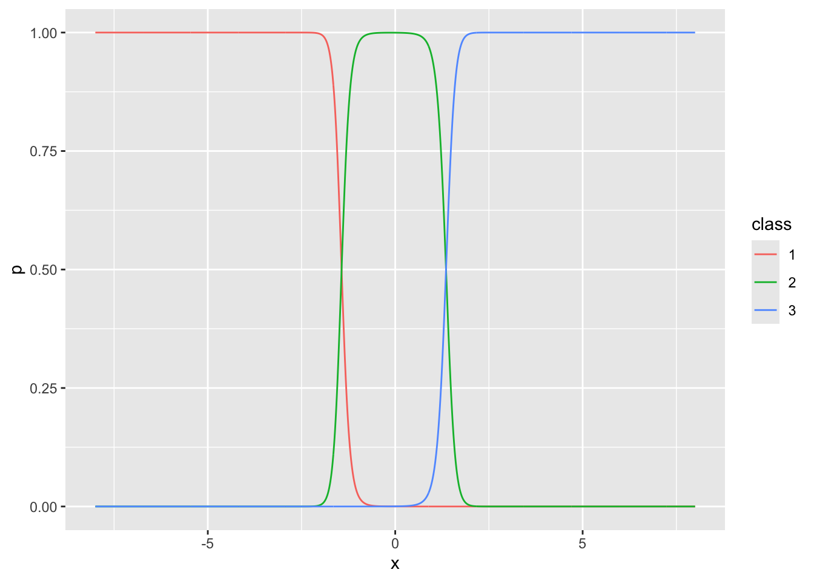
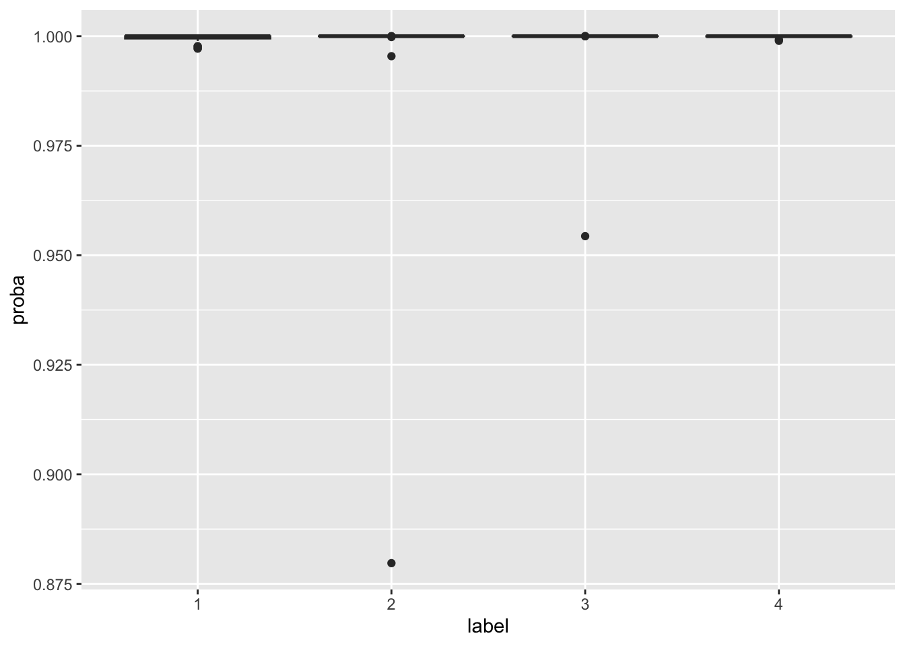
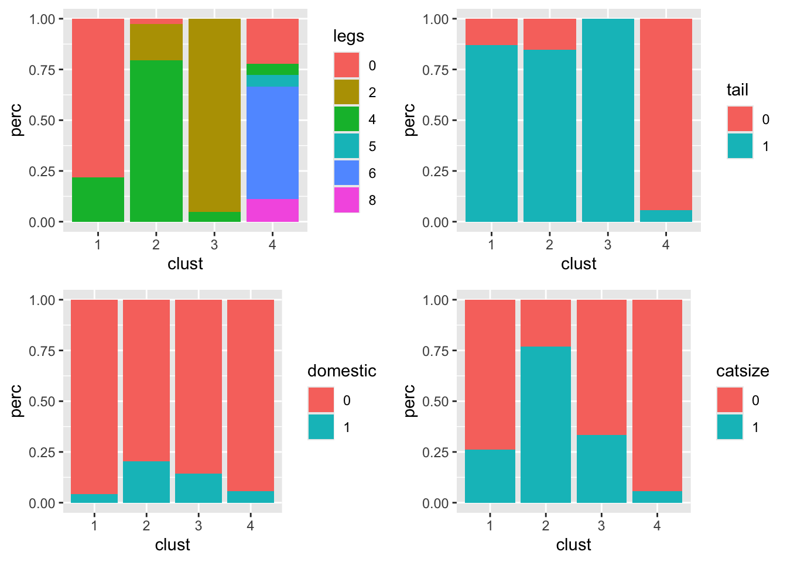
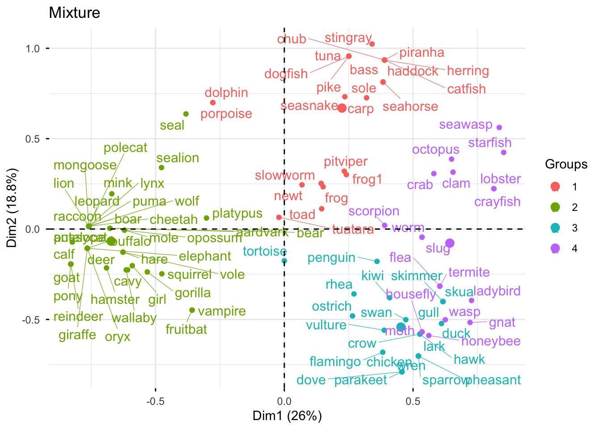

## Pour faire le TP
library(mclust)
library(Rmixmod)
library(ggplot2)
library(gridExtra)
library(FactoMineR)
library(factoextra)
library(reshape2)
library(circlize)
library(viridis)TP 4 - Classification par modèles de mélanges
Correction - 2025/2026
L’objectif de ce TP est d’illustrer les notions abordées autour des modèles de mélanges.
Les librairies R nécessaires pour ce TP :
1 Mélanges gaussiens
1.1 Application sur données simulées uni-dimensionnelles
Question : A l’aide du code suivant, simulez un jeu de données selon un mélange gaussien en \(3\) composantes unidimensionnel. Faites varier les différents paramètres (proportions, moyennes et variances).
set.seed(1234)
a<- ...
b<- ...
mu<-c(-a,0,a) # les moyennes \mu_k
sigma<-c(b,0.5,b) # les \sigma_k
prop<-c(0.2,0.3,0.5)
n<- ...
Z<-rmultinom(....)
X<-data.frame(X=c(rnorm(...),
rnorm(...),
rnorm(...)))
labeltrue<- # vecteur des vrais labelsaux<-seq(-(a+4),a+4,0.01)
Y<-data.frame(x=aux,
y1=(prop[1]*dnorm(aux,mu[1],sigma[1])),
y2=(prop[2]*dnorm(aux,mu[2],sigma[2])),
y3=(prop[3]*dnorm(aux,mu[3],sigma[3])))
gvrai<-ggplot(X,aes(x=X))+
geom_histogram(aes(y = after_stat(density)),bins=100)+
geom_line(aes(x=x,y=y1),data=Y,col="red")+
geom_line(aes(x=x,y=y2),data=Y,col="blue")+
geom_line(aes(x=x,y=y3),data=Y,col="green")+
theme_minimal()
gvrai
Correction
set.seed(1234)
a<-4
b<-1
mu<-c(-a,0,a) # les moyennes \mu_k
sigma<-c(b,0.5,b) # les \sigma_k
prop<-c(0.2,0.3,0.5)
n<-1000
Z<-rmultinom(n=n,size=1,prob=prop)
X<-data.frame(X=c(rnorm(n=sum(Z[1,]==1),mean=mu[1],sd=sigma[1]),
rnorm(n=sum(Z[2,]==1),mean=mu[2],sd=sigma[2]),
rnorm(n=sum(Z[3,]==1),mean=mu[3],sd=sigma[3])))
labeltrue<-c(rep(1,sum(Z[1,]==1)), rep(2,sum(Z[2,]==1)), rep(3,sum(Z[3,]==1)))aux<-seq(-(a+4),a+4,0.01)
Y<-data.frame(x=aux,
y1=(prop[1]*dnorm(aux,mu[1],sigma[1])),
y2=(prop[2]*dnorm(aux,mu[2],sigma[2])),
y3=(prop[3]*dnorm(aux,mu[3],sigma[3])))
gvrai<-ggplot(X,aes(x=X))+
geom_histogram(aes(y = after_stat(density)),bins=100)+
geom_line(aes(x=x,y=y1),data=Y,col="red")+
geom_line(aes(x=x,y=y2),data=Y,col="blue")+
geom_line(aes(x=x,y=y3),data=Y,col="green")+
theme_minimal()
gvraiQuestion : Estimez les paramètres d’un mélange à \(K=3\) classes à l’aide de la fonction Mclust() de la librairie mclust. Comparez la classification obtenue avec les vrais labels.
# A completer
res<-Mclust(...)
table(...,...)
adjustedRandIndex(...,...)
Correction
res<-Mclust(X$X,G=3)
table(res$classification,labeltrue) labeltrue
1 2 3
1 190 2 0
2 0 306 1
3 0 0 501adjustedRandIndex(res$classification,labeltrue)[1] 0.9923714Question : Représentez la densité de mélange estimée sur l’histogramme de l’échantillon simulé. Vous pouvez vous aider de la fonction dnorm() appliquée avec les différentes estimations de paramètres par composante.
# A completer
# dans y_k <- \pi_k \times \phi(x; \mu_k,\sigma_k^2)
MelEstim<-data.frame(x=aux,
y1=.....,
y2=.....,
y3=......)
MelEstim<-data.frame(MelEstim,Somme=apply(MelEstim[,2:4],1,sum))
gMelEst<-ggplot(X,aes(x=X))+
geom_histogram(aes(y = after_stat(density)),bins=100)+
geom_line(aes(x=x,y=y1),data=MelEstim,col="red")+
geom_line(aes(x=x,y=y2),data=MelEstim,col="green4")+
geom_line(aes(x=x,y=y3),data=MelEstim,col="blue")+
geom_line(aes(x=x,y=Somme),data=MelEstim,col="yellow",linetype = "dashed",linewidth=1.5)
gMelEst
Correction
MelEstim<-data.frame(x=aux,
y1=res$parameters$pro[1] * dnorm(aux,res$parameters$mean[1],sqrt(res$parameters$variance$sigmasq[1])),
y2=res$parameters$pro[2] * dnorm(aux,res$parameters$mean[2],sqrt(res$parameters$variance$sigmasq[2])),
y3=res$parameters$pro[3] * dnorm(aux,res$parameters$mean[3],sqrt(res$parameters$variance$sigmasq[3])))
MelEstim<-data.frame(MelEstim,Somme=apply(MelEstim[,2:4],1,sum))
gMelEst<-ggplot(X,aes(x=X))+
geom_histogram(aes(y = after_stat(density)),bins=100)+
geom_line(aes(x=x,y=y1),data=MelEstim,col="red")+
geom_line(aes(x=x,y=y2),data=MelEstim,col="green4")+
geom_line(aes(x=x,y=y3),data=MelEstim,col="blue")+
geom_line(aes(x=x,y=Somme),data=MelEstim,col="yellow",linetype = "dashed",linewidth=1.5)
gMelEstQuestion : Calculez les probabilités a posteriori d’appartenance des individus à chacune des trois classes et tracez-les graphiquement.
# dans p mettre le vecteur des proba a posteriori d'appartenance (t_{11},\ldots,t_{n1},t_{12},\ldots,t_{n3})
MelProba<-data.frame(x=rep(aux,3),
p= c(..., ..., ..),
class=as.factor(rep(c(1,2,3),each=length(aux))))
gprobapost<-ggplot(MelProba,aes(x=x,y=p,col=class))+geom_line()
gprobapost
Correction
MelProba<-data.frame(x=rep(aux,3),
p=c(MelEstim$y1 / MelEstim$Somme ,
MelEstim$y2 / MelEstim$Somme,
MelEstim$y3 / MelEstim$Somme),
class=as.factor(rep(c(1,2,3),each=length(aux))))
gprobapost<-ggplot(MelProba,aes(x=x,y=p,col=class))+geom_line()
gprobapost
Question : Tracez les boxplots des probabilités d’appartenance maximales par classe. Vous pouvez vous aider de la fonction apply().
df<-data.frame(lab=...,probamax=...)
gprobamax<-ggplot(df,aes(x=lab,y=probamax))+geom_boxplot()
grid.arrange(gvrai,gMelEst,gprobapost,gprobamax,ncol=2)
Correction
gprobamax<-ggplot(data.frame(lab=as.factor(apply(res$z,1,which.max)),
probamax=apply(res$z,1,max)),
aes(x=lab,y=probamax))+geom_boxplot()
grid.arrange(gvrai,gMelEst,gprobapost,gprobamax,ncol=2)1.2 Application sur des données simulées dans \(\mathbb{R}^2\)
On va ici utiliser les données simulées “ex4.1” disponibles dans la librairie mclust. Ces données sont simulées selon un mélange de densités gaussiennes, proposées dans Baudry et al (2010). L’objectif est d’étudier l’impact du choix des formes des mélanges considérées et de la différence d’objectif entre les critères BIC et ICL. On va au travers de ce jeu de données simulées simple appréhender la manipulation des fonctions pour le clustering par mélanges gaussiens avec R.
On commence ici par charger les données :
library(mclust)
data(Baudry_etal_2010_JCGS_examples)
Data<-ex4.1
ggplot(Data,aes(x=X1,y=X2))+geom_point()
1.2.1 Mélanges gaussiens diagonaux
Dans cette section, on va considérer une collection de modèles de mélanges gaussiens avec un nombre de composantes \(K\) variant entre \(2\) et \(10\) et des matrices de variance-covariance diagonales.
Question : A l’aide de la fonction Mclust(), estimez les paramètres des mélanges gaussiens considérés. Vous pouvez consulter l’aide de la fonction mclustModelNames() pour le choix des formes des mélanges.
# A COMPLETER
resBICdiag<-Mclust(....)
Correction
resBICdiag<-Mclust(Data,G=2:10,modelNames=c("EII","VII","EEI","VEI","EVI","VVI"))Question : A l’aide de la fonction fviz_mclust_bic(), visualisez le comportement du critère BIC sur la collection de modèles. Quel modèle est sélectionné ? Contrôlez à l’aide de summary(resBICdiag).
fviz_mclust(....,what=....)
summary(resBICdiag)
Correction
fviz_mclust(resBICdiag,what="BIC")summary(resBICdiag)----------------------------------------------------
Gaussian finite mixture model fitted by EM algorithm
----------------------------------------------------
Mclust EVI (diagonal, equal volume, varying shape) model with 10 components:
log-likelihood n df BIC ICL
-1993.944 600 40 -4243.764 -4470.305
Clustering table:
1 2 3 4 5 6 7 8 9 10
48 70 82 145 16 53 74 8 72 32 Question : Tracez la classification obtenue sur le nuage de points (vous pouvez utiliser la fonction fviz_cluster()). Comment est obtenue cette classification à partir du mélange gaussien retenu ? Quels sont les effectifs par classe ? Contrôlez les probabilités a posterori d’appartenance.
# Visualisation du clustering
fviz_cluster(...)
# Effectifs par classe
table(....)
# Boxplot des probabilités a posteriori maximales
Aux<-data.frame(label=..., proba=...)
ggplot(Aux,aes(x=label,y=proba))+geom_boxplot()
Correction
# Effectifs par classe
table(resBICdiag$classification)
1 2 3 4 5 6 7 8 9 10
48 70 82 145 16 53 74 8 72 32 Aux<-data.frame(label=paste("Cl",resBICdiag$classification,sep=""), proba=apply(resBICdiag$z,1,max))
# Boxplot des probabilités a posteriori maximales
h1<-ggplot(Aux,aes(x=label,y=proba))+geom_boxplot()
# Classification sur les points
h2<-fviz_cluster(resBICdiag,data=Data,ellipse.type="norm",geom="point")+ggtitle("")+theme(legend.position = "none")
grid.arrange(h1,h2,ncol=2)Question : Quel mélange gaussien est retenu avec le critère ICL ? Vous utiliserez la fonction mclustICL(). Etudiez la classification alors déduite.
resICL<-mclustICL(...)
summary(resICL)
Correction
resICL<-mclustICL(Data,G=2:10,modelNames=c("EII","VII","EEI","VEI","EVI","VVI"))
summary(resICL)Best ICL values:
EVI,4 VVI,4 EEI,4
ICL -4407.029 -4422.87307 -4446.3616
ICL diff 0.000 -15.84396 -39.3325modICL<-Mclust(Data,G=4,modelNames = "EVI")
Aux<-data.frame(label=paste("Cl",modICL$classification,sep=""), proba=apply(modICL$z,1,max))
ggplot(Aux,aes(x=label,y=proba))+geom_boxplot()plot(modICL,what="classification")1.2.2 Toutes les formes de mélanges gaussiens
Question : Reprenez les questions de la section précédente en considérant ici toutes les formes de mélanges gaussiens. Commentez.
# A COMPLETER
Correction
Choix avec le critère BIC :
resBICall<-Mclust(Data,G=2:10)
#plot(resBICall)
fviz_mclust(resBICall,what="BIC")summary(resBICall)----------------------------------------------------
Gaussian finite mixture model fitted by EM algorithm
----------------------------------------------------
Mclust EEV (ellipsoidal, equal volume and shape) model with 6 components:
log-likelihood n df BIC ICL
-1957.781 600 25 -4075.484 -4248.353
Clustering table:
1 2 3 4 5 6
78 122 121 107 132 40 Aux<-data.frame(label=paste("Cl",resBICall$classification,sep=""), proba=apply(resBICall$z,1,max))
h1<-ggplot(Aux,aes(x=label,y=proba))+geom_boxplot()
h2<-fviz_cluster(resBICall,data=Data,ellipse.type="norm",geom="point")+ggtitle("")+theme(legend.position = "none")
grid.arrange(h1,h2,ncol=2)Choix avec le critère ICL :
resICLall<-mclustICL(Data,G=2:10)
summary(resICLall)Best ICL values:
VVV,4 EVV,4 EEV,6
ICL -4230.492 -4240.60219 -4248.35295
ICL diff 0.000 -10.10982 -17.86057resICL<-Mclust(Data,G=4,modelNames = "VVV")
Aux<-data.frame(label=paste("Cl",resICL$classification,sep=""), proba=apply(resICL$z,1,max))
h1<-ggplot(Aux,aes(x=label,y=proba))+geom_boxplot()
h2<-fviz_cluster(resICL,data=Data,ellipse.type="norm",geom="point")+ggtitle("")+theme(legend.position = "none")
grid.arrange(h1,h2,ncol=2)1.3 Etude des données de vins
On reprend dans ce TP les données wine disponibles sur la page moodle du cours. On charge ici les données.
wine<-read.table("wine.txt",header=T)
wine$Qualite = as.factor(wine$Qualite)
wine$Type = factor(wine$Type, labels = c("blanc", "rouge"))
wineinit<-wine
wine[,-c(1,2)]<-scale(wine[,-c(1,2)],center=T,scale=T)
head(wine) Qualite Type AcidVol AcidCitr SO2lbr SO2tot Densite
1352 medium rouge 1.638714588 -1.92626362 -1.2083376 -1.15967786 -0.46497450
5493 medium blanc -0.068544417 -1.35617574 -0.7004747 -0.85707581 -0.33499781
5153 medium blanc -0.800226847 -0.59605856 0.5409681 -0.02047014 1.32391517
5308 medium blanc -0.007570881 0.92417581 1.7824108 1.27893867 1.08790487
3866 medium blanc 0.419243870 0.03737243 -0.5311870 0.99413674 0.03783006
694 medium rouge 0.785085086 0.03737243 -0.4747578 0.19313131 1.27260858
Alcool
1352 1.14546909
5493 -1.12092616
5153 -1.29526426
5308 -1.29526426
3866 0.09944051
694 -0.94658806On fait une ACP pour la visualisation des résultats dans la suite
resacp<-PCA(wine,quali.sup=c(1,2), scale.unit = TRUE,graph=FALSE)Question : Déterminez une classification de ces données à l’aide d’un modèle de mélange. Comparez votre résultat avec les classifications obtenues dans les TP précédents (avec Kmeans, CAH).
# A FAIRE
Correction
Avec le critère BIC :
set.seed(1234)
resBICall<-Mclust(wine[,-c(1,2)],G=2:20)
fviz_mclust(resBICall,what="BIC")summary(resBICall)----------------------------------------------------
Gaussian finite mixture model fitted by EM algorithm
----------------------------------------------------
Mclust VVE (ellipsoidal, equal orientation) model with 9 components:
log-likelihood n df BIC ICL
-3817.907 600 131 -8473.812 -8644.462
Clustering table:
1 2 3 4 5 6 7 8 9
94 51 32 106 22 156 63 47 29 resBIC<-Mclust(wine[,-c(1,2)],G=9,modelNames = "VVE")
Aux<-data.frame(label=paste("Cl",resBICall$classification,sep=""), proba=apply(resBICall$z,1,max))
h1<-ggplot(Aux,aes(x=label,y=proba))+geom_boxplot()
h2<-fviz_cluster(resBICall,data=Data,ellipse.type="norm",geom="point")+ggtitle("")+theme(legend.position = "none")
grid.arrange(h1,h2,ncol=2)Avec le critère ICL :
resICLall<-mclustICL(wine[,-c(1,2)],G=2:20)
summary(resICLall)Best ICL values:
EVV,3 VVE,9 EEV,3
ICL -8628.533 -8644.46196 -8648.00671
ICL diff 0.000 -15.92897 -19.47373resICL<-Mclust(wine[,-c(1,2)],G=3,modelNames = "EVV")
Aux<-data.frame(label=paste("Cl",resICL$classification,sep=""), proba=apply(resICL$z,1,max))
h1<-ggplot(Aux,aes(x=label,y=proba))+geom_boxplot()
h2<-fviz_cluster(resICL,data=Data,ellipse.type="norm",geom="point")+ggtitle("")+theme(legend.position = "none")
grid.arrange(h1,h2,ncol=2)df<-data.frame(wine[,-c(1,2)],Class=as.factor(resICL$classification))
df<-melt(df,id="Class")
ggplot(df,aes(x=variable,y=value))+geom_violin(aes(fill=Class))# comparaison des deux classifications
table(resICL$classification,resBIC$classification)
1 2 3 4 5 6 7 8 9
1 92 0 0 26 0 0 0 0 29
2 1 30 27 60 2 10 0 0 0
3 1 21 5 20 20 146 63 47 0adjustedRandIndex(resICL$classification,resBIC$classification)[1] 0.28283142 Classification par mélanges pour données catégorielles
Dans cette partie, on souhaite obtenir une classification des animaux du jeu de données zoo à l’aide de modèles de mélanges. On reprend donc le jeu de données et on refait une analyse en composantes multiples pour la visualisation des résultats.
zoo<-read.table("zoo-dataTP.txt",header=T,stringsAsFactors = TRUE)
for (j in 1:ncol(zoo))
zoo[,j]<-as.factor(zoo[,j])
summary(zoo) hair feathers eggs milk airbone aquatic predator toothed backbone
0:58 0:81 0:42 0:60 0:77 0:65 0:45 0:40 0:18
1:43 1:20 1:59 1:41 1:24 1:36 1:56 1:61 1:83
breathes venomous fins legs tail domestic catsize
0:21 0:93 0:84 0:23 0:26 0:88 0:57
1:80 1: 8 1:17 2:27 1:75 1:13 1:44
4:38
5: 1
6:10
8: 2 dim(zoo)[1] 101 16res.mca<- MCA(zoo,ncp = 5, graph = FALSE)
fviz_mca_ind(res.mca,repel=T)Pour la suite du TP, on pourra utiliser les fonctions auxiliaires suivantes. La fonction barplotClus() permet de tracer la répartition des modalités de variables qualitatives pour chaque classe d’un clustering donné.
# J indice des variables
# Data = jeu de données
# clust = clustering étudié
# output : liste des graphes par variable dans J donnant la répartition des modalités de J par classe de clust
barplotClus <- function(clust, Data, J) {
aux.long.p <- heatm(clust, Data, J)$freq
p<-NULL
for (j in 1:length(J)) {
p[[j]] <- ggplot(aux.long.p[which(aux.long.p$variable == colnames(Data)[J[j]]), ],
aes(x = clust, y = perc, fill = value)) + geom_bar(stat = "identity")+
labs(fill = colnames(Data)[J[j]])
}
return(p)
}
heatm <- function(clust, Data, J) {
library(dplyr)
Dataaux <- data.frame(id.s = c(1:nrow(Data)), Data)
aux <- cbind(Dataaux, clust)
aux.long <- melt(data.frame(lapply(aux, as.character)), stringsAsFactors = FALSE,
id = c("id.s", "clust"), factorsAsStrings = T)
# Effectifs
aux.long.q <- aux.long %>%
group_by(clust, variable, value) %>%
mutate(count = n_distinct(id.s)) %>%
distinct(clust, variable, value, count)
# avec fréquences
aux.long.p <- aux.long.q %>%
group_by(clust, variable) %>%
mutate(perc = count/sum(count)) %>%
arrange(clust)
Lev <- NULL
for (j in 1:ncol(Data)) Lev <- c(Lev, levels(Data[, j]))
Jaux <- NULL
for (j in 1:length(J)) {
Jaux <- c(Jaux, which(aux.long.p$variable == colnames(Data)[J[j]]))
}
gaux <- ggplot(aux.long.p[Jaux, ], aes(x = clust, y = value)) + geom_tile(aes(fill = perc)) +
scale_fill_gradient2(low = "white", mid = "blue", high = "red") + theme_minimal()
return(list(gaux = gaux, eff = aux.long.q, freq = aux.long.p))
}Nous allons utiliser une stratégie de classification via des modèles de mélange. Rappelons que l’on a pour données \(\mathbf{X}=(x_1,\ldots,x_n)\) avec \(x_i\) décrit par \(p\) variables catégorielles, chacune avec \(m_j\) modalités. Dans ce cas de variables qualitatives, on peut considérer des distributions multinomiales par variable et par composante. Pour écrire la distribution de mélange, on commence par transformer l’écriture des données de la façon suivante :
\[x_i=(x_{i1},\ldots,x_{ip})\rightsquigarrow (x_i^{jh}; j=1,\ldots,p, h=1,\ldots,m_j)\] avec \[ x_i^{\,jh}=\left\{\begin{array}{l l}1 & \textrm{ si } i \textrm{ prend la modalité } h \textrm{ pour la variable }j\\ 0 & \textrm{ sinon.}\end{array}\right. \] Les densités de mélange considérées sont de la forme \[f(.|\theta_K)=\underset{k=1}{\stackrel{K}{\sum}}\pi_k f_k(x_i|\boldsymbol{\alpha}_k)\] avec
\(f_k(x_i|\boldsymbol{\alpha}_k)=\underset{j=1}{\stackrel{p}{\prod}}\underset{h=1}{\stackrel{m_j}{\prod}}\left(\alpha_k^{\,jh}\right)^{x_i^{jh}}\)
\(\boldsymbol{\alpha}_k=(\alpha_k^{\,jh}; j=1,\ldots,p, h=1,\ldots,m_j)\) avec \(\underset{h=1}{\stackrel{m_j}{\sum}}\alpha_k^{jh}=1\)
\(\theta_k=(\pi_1,\ldots,\pi_K,\boldsymbol{\alpha}_1,\ldots,\boldsymbol{\alpha}_K)\)
Classiquement, on reparamétrise par
- Pour chaque classe \(k\) et chaque variable \(j\) \[(\alpha_k^{\ j1},\ldots,\alpha_k^{\ jm_j}) \rightarrow (a_k^{\ j1},\ldots,a_k^{\ jm_j},\varepsilon_k^{\ j1},\ldots,\varepsilon_k^{\ jm_j})\] avec \[ a_k^{\ jh}=\left\{\begin{array}{l l}1 & \textrm{ si } h=\underset{h'=1,\ldots,m_j}{\mbox{argmax}}\ \alpha_k^{\ jh'}\\ 0 & \textrm{sinon}\end{array}\right. \] (\(h\)= modalité majoritaire pour variable \(j\) dans classe \(k\)) et
\[ \varepsilon_{k}^{\ jh}=\left\{\begin{array}{l l}1 - \alpha_k^{\ jh} & \textrm{ si } a_k^{\ jh}=1\\ \alpha_k^{\ jh} & \textrm{ si } a_k^{\ jh}=0\end{array}\right. \]
Par exemple \((0.3,0.6,0.1) \rightsquigarrow (0,1,0,\ \ 0.3,0.4,0.1)\)
La densité de mélange se réécrit alors \[f(.|\theta_K)=\underset{k=1}{\stackrel{K}{\sum}}\pi_k \underset{j=1}{\stackrel{p}{\prod}}\underset{h=1}{\stackrel{m_j}{\prod}} \left[\left(1-\varepsilon_k^{\,jh}\right)^{a_k^{\ jh}} \left(\varepsilon_k^{\,jh}\right)^{1-a_k^{\ jh}}\right]^{x_i^{jh}}\]
Selon les hypothèses faites sur les \(\varepsilon_{k}^{\ jh}\) et sur les proportions du mélange, on a 10 formes possibles (dans le même esprit que les différentes formes des mélanges gaussiens, cf cours).
Question : A l’aide de la fonction mixmodCluster de la librairie Rmixmod, déterminez une classification des données par modèles de mélange. Vous étudierez en particulier les probabilités conditionnelles d’appartenance. Vous pouvez tester plusieurs formes de mélange.
library(Rmixmod)
resmixmod<-mixmodCluster(
data = zoo, nbCluster = 2:20,
criterion = c("BIC", "ICL"),
model = mixmodMultinomialModel("Binary_pk_Ekjh")
)
# Graphe des critères de sélection
K<-NULL
BIC<-NULL
ICL<-NULL
for (k in 1:length(resmixmod@results)){
K<-c(K,resmixmod@results[[k]]@nbCluster)
BIC<-c(BIC,resmixmod@results[[k]]@criterionValue[1])
ICL<-c(ICL,resmixmod@results[[k]]@criterionValue[2])
}
## graphique à faire
...
# Etude de la classification retenue
df<-data.frame(proba=apply(resmixmod@bestResult@proba,1,max),label=as.factor(apply(resmixmod@bestResult@proba,1,which.max)))
ggplot(df,aes(x=label,y=proba))+geom_boxplot()
table(resmixmod@bestResult@partition)
## A completer
# Comparaison avec les autres classifications
## A completer
Correction
library(Rmixmod)
resmixmod<-mixmodCluster(
data = zoo,
nbCluster = 2:20,
criterion = c("BIC", "ICL"),
model = mixmodMultinomialModel("Binary_pk_Ekjh") #"Binary_pk_Ekjh")
)# Graphe des critères de sélection
K<-NULL
BIC<-NULL
ICL<-NULL
for (k in 1:length(resmixmod@results)){
K<-c(K,resmixmod@results[[k]]@nbCluster)
BIC<-c(BIC,resmixmod@results[[k]]@criterionValue[1])
ICL<-c(ICL,resmixmod@results[[k]]@criterionValue[2])
}
aux<-sort.int(K,index.return = T)
df<-data.frame(K=K[aux$ix],BIC=BIC[aux$ix],ICL=ICL[aux$ix])
df<-melt(df,id=c("K"))
ggplot(df,aes(x=K,y=value,color=variable))+geom_line()# Etude de la classification retenue
df<-data.frame(proba=apply(resmixmod@bestResult@proba,1,max),label=as.factor(apply(resmixmod@bestResult@proba,1,which.max)))
ggplot(df,aes(x=label,y=proba))+geom_boxplot()
table(resmixmod@bestResult@partition)
1 2 3 4
23 39 21 18 p<-barplotClus(resmixmod@bestResult@partition,zoo,J=c(1:4))
grid.arrange(grobs=p,ncol=2)p<-barplotClus(resmixmod@bestResult@partition,zoo,J=c(5:8))
grid.arrange(grobs=p,ncol=2)p<-barplotClus(resmixmod@bestResult@partition,zoo,J=c(9:12))
grid.arrange(grobs=p,ncol=2)p<-barplotClus(resmixmod@bestResult@partition,zoo,J=c(13:16))
grid.arrange(grobs=p,ncol=2)
fviz_mca_ind(res.mca,habillage=as.factor(resmixmod@bestResult@partition),repel=T)+
labs(title="Mixture")
fviz_mca_var(MCA(data.frame(cl=as.factor(resmixmod@bestResult@partition),zoo),quali.sup=1,graph=F),repel=T)# Comparaison avec Kmeans sur ACM
reskmeans<-kmeans(res.mca$ind$coord,4)
table(resmixmod@bestResult@partition,reskmeans$cluster)
1 2 3 4
1 1 0 2 20
2 38 0 0 1
3 1 20 0 0
4 0 0 18 0adjustedRandIndex(resmixmod@bestResult@partition,reskmeans$cluster)[1] 0.8729107library(circlize)
clust1F<-paste("ClKm-",reskmeans$cluster,sep="")
clust2F<-paste("ClMixture-",resmixmod@bestResult@partition,sep="")
library(viridis)
mycolor <- viridis(8, alpha = 1, begin = 0, end = 1, option = "H")
mycolor <- mycolor[sample(1:8)]
chordDiagram(table(clust1F,clust2F),grid.col=mycolor)